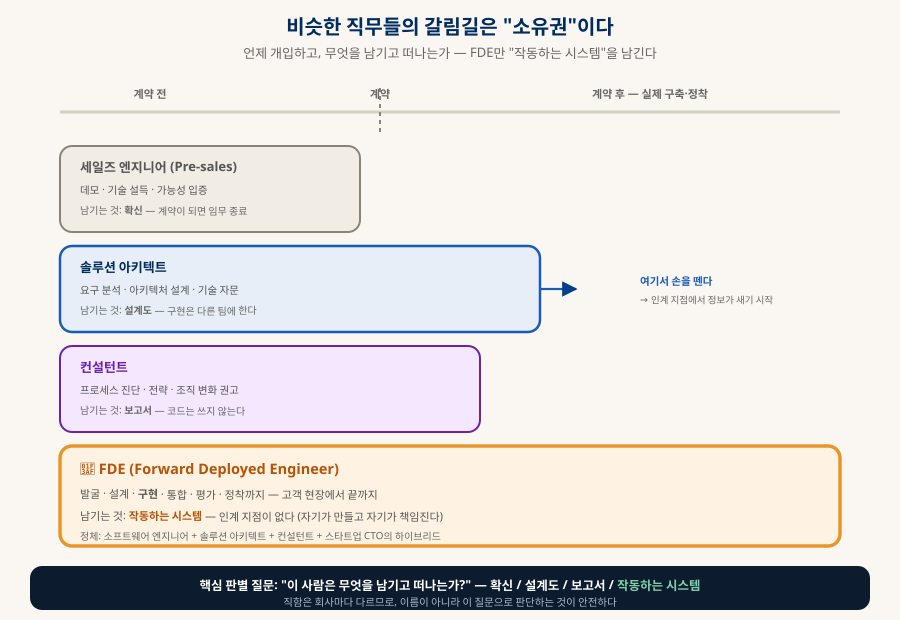
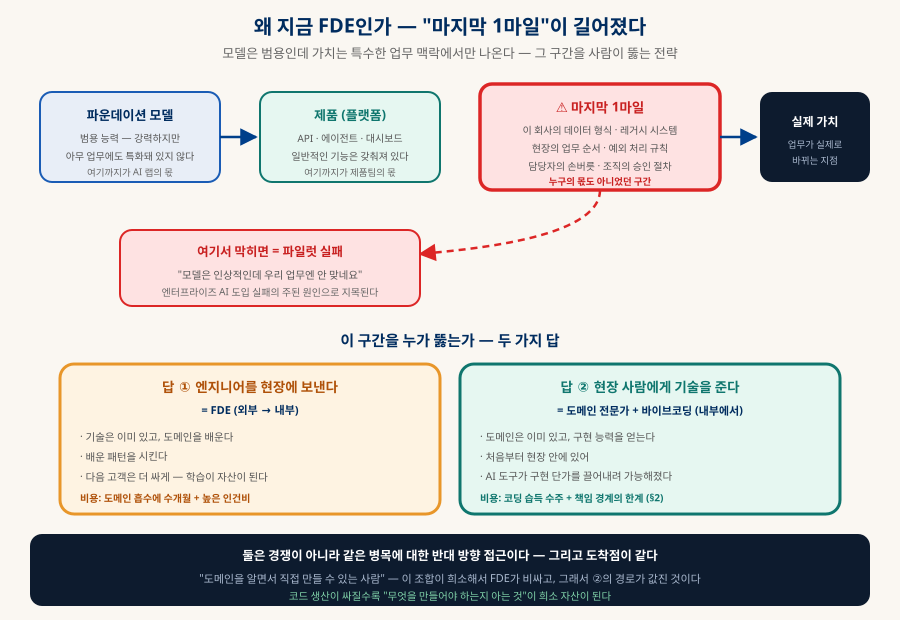
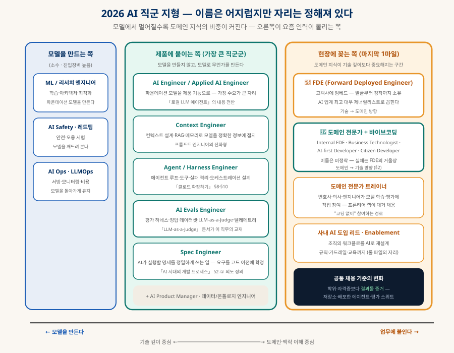

AI 시대의 직무 지형
FDE와 그 거울상 — 코드가 싸질 때 값이 오르는 것
모델은 범용인데 가치는 특수한 업무 맥락에서만 나온다. 그 사이의 마지막 1마일을 누가 뚫는가에서 새 직무들이 태어났다 — 엔지니어를 현장에 보내는 FDE, 그리고 현장 사람에게 구현 능력을 주는 그 거울상. 두 경로가 어디서 만나는지, 그리고 2026년의 직군 이름들이 실제로 무엇을 소유하는지 정리한다.
0. 한눈에 보기 — 관통하는 한 문장
이 문서의 모든 내용이 여기서 파생된다
그래서 코드 생산이 싸질수록 "무엇을 만들어야 하는지 아는 것"의 값이 오른다 — 2026년의 새 직무들은 전부 이 명제의 파생물이다.
— 새 직무들의 서식지 (§1)
도메인→기술 (§2)
"무엇을 남기나"로 판단 (§1-A)
것은 다르다 (§2-2)
1. FDE — 마지막 1마일을 걷는 직무
Forward Deployed Engineer · 전방 배치 엔지니어
FDE는 "전방 배치"라는 군사 표현 그대로, 엔지니어를 고객사 안에 밀어 넣는 직무다. Palantir가 2000년대 중반에 만들었고(내부적으로 FDSE라고도 부른다), 핵심은 한 줄로 압축된다 — 슬라이드나 문서가 아니라, 고객 현장에서 작동하는 프로덕션 코드를 직접 쓴다.
A기존 직무와 무엇이 다른가 — "무엇을 남기고 떠나는가"

| 직무 | 개입 시점 | 남기는 것 | 결정적 차이 |
|---|---|---|---|
| 세일즈 엔지니어 | 계약 전 | 확신 | 계약이 성사되면 임무가 끝난다 |
| 솔루션 아키텍트 | 계약 전후 | 설계도·자문 | 구현은 다른 팀에 인계 — 인계 지점에서 맥락이 샌다 |
| 컨설턴트 | 프로세스 단계 | 보고서·권고 | 코드를 쓰지 않는다 |
| FDE | 계약 후, 끝까지 | 작동하는 시스템 | 인계 지점이 없다 — 자기가 만들고 자기가 책임진다 |
B왜 지금 폭발했나 — 진단이 바뀌었다
핵심 논리는 이것이다: 엔터프라이즈 AI 파일럿이 실패하는 이유는 모델이 약해서가 아니라 "배치(deployment)"가 깨져서라는 진단. 파운데이션 모델은 강력하지만 아무 업무에도 특화돼 있지 않고, 실제 가치는 이 회사의 데이터 형식·레거시 시스템·업무 순서·예외 규칙에 붙을 때만 발생한다. 그 구간이 누구의 몫도 아니었던 마지막 1마일이다:

Palantir가 "너무 비싸고 이상해서 아무도 따라 하지 않던" 모델이 갑자기 표준이 된 것도 이 진단 때문이다. 2026년 현재 OpenAI·Anthropic·Google이 이 모델을 명시적 엔터프라이즈 전략으로 채택했고, Scale AI·Harvey·Mistral·Cohere·Databricks 등 대형 AI 스타트업 대부분이 변형된 형태로 운영한다.
2. 거울상 — 도메인 전문가가 구현 능력을 얻을 때
같은 목적지, 정반대 출발점
FDE 모델이 비싸고 희소한 이유는 "도메인 이해 + 구현 능력"의 결합이 드물어서다. 그런데 이 결합을 만드는 길은 하나가 아니다 — 엔지니어에게 도메인을 주입하는 길(FDE)과, 도메인 전문가에게 구현 능력을 주입하는 길이 있다. 후자가 바이브코딩으로 갑자기 열렸다.
2-1. 두 경로의 수렴 — 어디서 만나는가
그리고 이런 사람들을 부르는 이름은 아직 정착되지 않았다 — 회사마다 다르게 쓴다:
| 이름 | 뉘앙스 | 평가 |
|---|---|---|
| Internal FDE | 사내에 배치된 FDE | 가장 정확한 표현 — 실제로 이렇게 쓰는 기업이 있다 |
| Citizen Developer | IT 부서 밖 직원이 도구를 만든다 | 노코드 시대의 용어 — "본업이 아닌 사람"이라는 낮춰보는 뉘앙스가 있어 AI 시대엔 부족하다 |
| Business Technologist | 업무와 기술의 경계 인력 | 컨설팅·리서치 업계 용어. 중립적이지만 추상적 |
| AI-first Developer | AI 에이전트를 지휘해 프로덕션 품질을 만드는 사람 | 2026년에 뜬 표현 — 출발점(도메인/기술)을 묻지 않는다는 점이 특징 |
2-2. 만드는 것 vs 책임지는 것 — 정직한 경계
다만 도착점에서 두 사람이 감당하는 범위는 다르다. 이 지식 베이스를 관통하는 주제가 여기서도 반복된다 — 만들 수 있다는 것과 책임질 수 있다는 것은 다른 문제다.
| 바이브코딩으로 쉽게 얻는 것 | 여전히 어려운 것 |
|---|---|
| 프로토타입 — "이게 가능한가" 검증 | 프로덕션 운영 — 보안·성능·장애 대응·온콜 |
| 내부 도구 · 업무 자동화 | 시스템 설계 — 다른 시스템과의 통합, 확장 대비 |
| 데이터 분석 · 리포트 생성 | 유지보수 가능한 코드 — 6개월 뒤 남이 고칠 수 있는가 |
| 기존 SaaS를 대체하는 사내 앱 | 고객 데이터의 책임 — 「SaaS 해부」의 "책임의 구독" |
3. 2026 직군 지형 — 이름은 어지럽지만 자리는 정해져 있다
모델에서 멀어질수록 도메인 지식의 비중이 커진다

| 직군 | 무엇을 하나 | 이 지식 베이스와의 연결 |
|---|---|---|
| AI Engineer / Applied AI Engineer | 모델을 만드는 게 아니라 파운데이션 모델을 제품 기능으로 붙인다 — 수요가 가장 큰 자리 | 「로컬 LLM 에이전트」 전반 |
| Context Engineer | 컨텍스트 설계·RAG·메모리로 모델을 정확한 정보에 접지시킨다 — 프롬프트 엔지니어의 진화형 | 「클로드 확장하기」의 계보 (프롬프트→하네스→루프→그래프) |
| AI Evals Engineer | 평가 하네스·정답 데이터셋·LLM-as-a-Judge 파이프라인·프로덕션 텔레메트리 | 「LLM-as-a-Judge」 문서가 통째로 이 직무의 교재 |
| Agent / Harness Engineer | 에이전트 루프·도구·실패 격리·오케스트레이션 설계 | 「클로드 확장하기」 §8·§10 · 「로컬 LLM 코딩 공장」 |
| Spec Engineer | AI가 실행할 명세를 정밀하게 쓴다 — 요구를 코드 이전에 확정 | 「AI 시대의 개발 프로세스」 §2-① 의도 정의 |
| AI Ops / LLMOps | 서빙·모니터링·비용 관리 | 「SaaS 해부」 §4-D · 「로컬 LLM 코딩 공장」 |
| 도메인 전문가 트레이너 | 변호사·의사·엔지니어가 모델 학습·평가에 직접 참여 — 프론티어 랩이 대거 채용 | 코딩 없이 도메인만으로 참여하는 경로 |
| 사내 AI 도입 리드 (Enablement) | 조직의 워크플로를 AI로 재설계 — 규칙·가드레일·교육까지 | rules/LICENSE-RULES.md 같은 룰 파일의 자리 |
4. 사업 모델로 보면 — 「SaaS 해부」의 반대편
한계비용 0을 포기하고 얻는 것
| 전형적 SaaS (셀프서브) | FDE 모델 | |
|---|---|---|
| 고객 추가 비용 | ≈ 0 — 멀티테넌시 (「SaaS 해부」 §2) | 높다 — 사람이 붙는다 |
| 도입 방식 | 가입하면 알아서 씀 (PLG) | 엔지니어가 들어가 함께 만든다 |
| 단가 | 월 구독 (소액 다수) | 엔터프라이즈 계약 (고액 소수) |
| 확장의 원리 | 제품이 알아서 팔린다 | 현장에서 배운 것을 제품으로 역류 → 다음 고객은 더 싸게 |
| 경쟁 우위 | 제품 품질·가격 | 도입 마찰 자체가 진입장벽 — 경쟁자도 같은 1마일을 걸어야 한다 |
여기서 바이브코딩이 결정적으로 개입한다 — 예전엔 고객사 맞춤 구현이 너무 비싸 "확장 불가"로 취급됐지만, AI 도구가 구현 단가를 끌어내리자 "사람이 붙는 모델"이 다시 계산에 맞게 됐다. FDE 붐의 절반은 진단의 변화(§1-B), 나머지 절반은 이 경제성의 변화다.
5. 나는 어디에 서 있나
이름을 고르는 대신 좌표를 찍는 법
질문 ① 내 출발점은?
기술에서 왔다면 부족한 것은 도메인 — 현장에 붙는 시간이 자산이 된다. 도메인에서 왔다면 부족한 것은 구현 — AI 도구가 그 격차를 메우는 중이다.
질문 ② 내가 남기는 것은?
확신(설득)·설계도(자문)·보고서(진단)·작동하는 시스템 중 무엇인가. 마지막이면 이름이 무엇이든 FDE적 역할이다.
질문 ③ 어디까지 책임지나?
프로토타입까지 / 내부 도구까지 / 고객에게 나가는 제품까지 / 안전이 걸린 시스템까지 — 이 선이 실질적 직무 정의다(§2-2).
6. 함께 읽기
각 직군의 실무 교재가 되는 문서들
| 직군·주제 | 문서 |
|---|---|
| AI Evals Engineer | 「LLM-as-a-Judge」 — 평가 설계의 전모 |
| Context / Harness / Agent Engineer | 「클로드 확장하기」 §8·§10 · 「로컬 LLM 에이전트」 · 「상주형 AI 에이전트」 |
| Spec Engineer · 프로세스 전반 | 「AI 시대의 개발 프로세스」 |
| 사업 모델의 반대편 | 「SaaS 해부」 — 멀티테넌시와 셀프서브 |
| 책임의 경계를 다룬 사례들 | 「데이터베이스」 §9(책임의 선택) · 「기능안전과 워치독」(증명 책임) · 「오픈소스 라이선스」(법적 책임) |
| 바이브코딩으로 무장하기 | 「로컬 LLM 코딩 공장」 · rules/LICENSE-RULES.md |
코드가 싸진 시대에 값이 오른 것은 코드가 아니라 맥락과 책임이다.